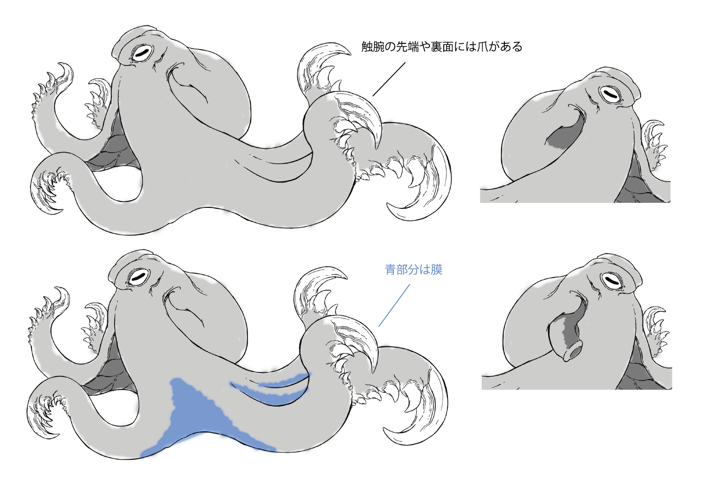
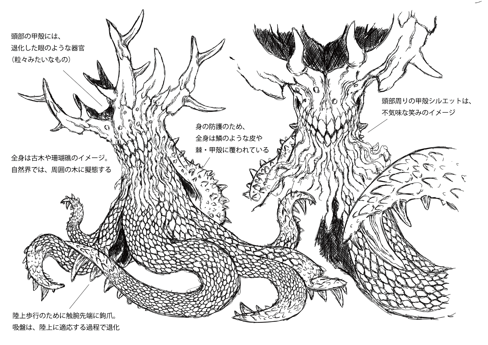
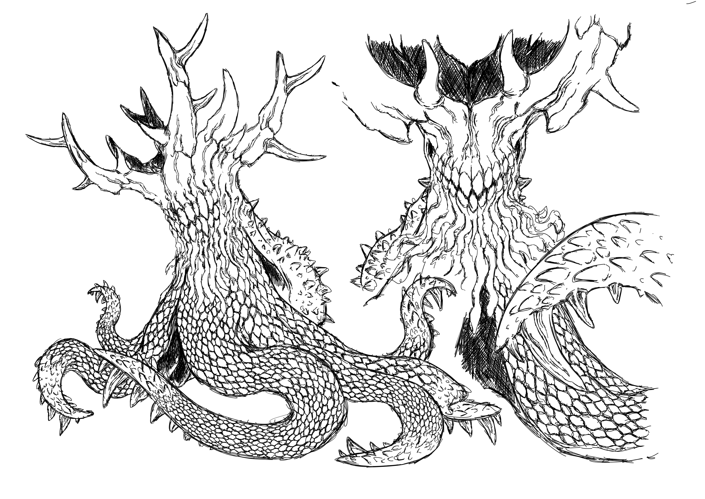
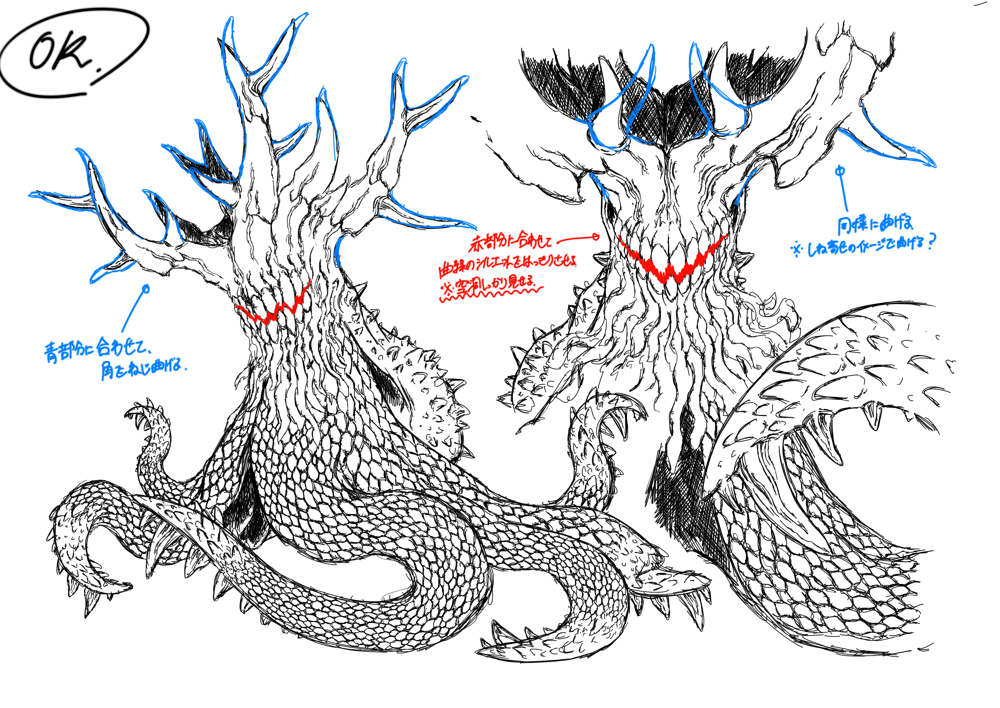

「 陸生頭足類のデザイン / Dsigan of Terrestrial Cephalopod 」
デザインコンセプト
本来、深海という強い水圧の中で進化を遂げた頭足類（蛸）。本作は、その特異な生命体を「陸生生物」として再定義するという、生物学的なイマジネーションから誕生しました。
水生生物を完全な陸上活動体として描く試みは、単なる形態の模写に留まりません。自然界においてさえ「エイリアン」と称されるほど異質な蛸のシルエットをベースに、重力に抗うための強靭な筋組織や、乾燥に耐えうる表皮といった「陸生特有の機能美」を融合させています。
デザインの核としたのは、見る者に与える「未知への違和感」と、そこに同居する「生物としての整合性」です。
粘膜を思わせる水生的な質感や触手の名残を随所に留めながらも、大地に根ざし、呼吸し、捕食するその佇まいは、異質でありながらどこか自然の理（ことわり）に馴染みます。
海と陸、二つの世界の境界を越境したその姿には、既存の生態系を揺るがすような、静かな実在感が宿っています。
コンセプトスケッチ
さて、「陸生生物としての蛸（タコ）」を具現化するにあたり、最大の課題となったのは「地上移動」という物理的な制約でした。
本来、海中では浮力に支えられ、自由な軌道を描く触腕ですが、陸上においては自重を支え、大地を蹴るための「脚」へと再構築されなければなりません。この必然性から、かつての触腕は先端や裏面に鋭い「爪」を備え、不整地を走破するための強靭な歩行器官へと進化を遂げています。
また、軟体動物特有の低重心な姿勢から脱却し、上半身を垂直に起こして自立する構造を採用しました。これにより、周囲を広く俯瞰し、獲物を的確に捉えるという、陸生捕食者としての合理的なシルエットを獲得しています。
本コンセプトスケッチにおける試みは、蛸が持つ本来のアイデンティティを損なうことなく、地上生活に不可欠な機能を最短距離で付与することにあります。
この初期的形態を起点として、今後はより詳細な生物学的ディテール——環境に即した皮膚の変質や、大気呼吸を可能にする呼吸器の配置など——を重ね、ひとつの完成された「生態」をデザインしていく予定です。

アイデアスケッチ
陸生の頭足類ということで、頭足類（蛸）自体がかなり異質な知能の高い生物という印象なので、
その印象をさらに強く引き出したデザインに仕上げようと考え、アイデアスケッチを行ないました。
そして、上がったデザインの中から以下のデザインに決定しました。



＜ デザイン案０２ ＞
このデザイン案は、エイリアンのような異質な雰囲気を重視したデザインになっています。
蛸ならではの触腕を使った周囲の状況の察知。それにより視力は不要となり、眼という器官が完全に退化した姿となっています。
それにより、頭部は非常に特徴的な鹿の角を模したような形状になっています。
「 陸生頭足類の造形 / Terrestrial Cephalopod Sculpture 」
造形：ねじれの工夫
今月更新予定
ホームへ戻る